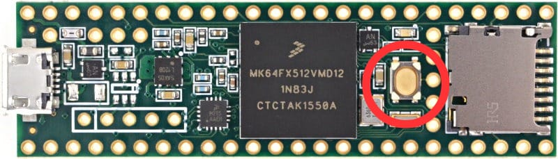

Load firmware to your Teensy via WebHID. Choose v2.2 or Beta, put your Teensy in programming mode by pressing the reset button (marked red), then flash firmware:

1. Firmware
Choose which firmware version to flash.
Careful: this is a beta and might introduce troubles, including losing data or settings of your unit. Use at your own risk.
2. Device & Flash
Press reset on your Teensy to enter programming mode.